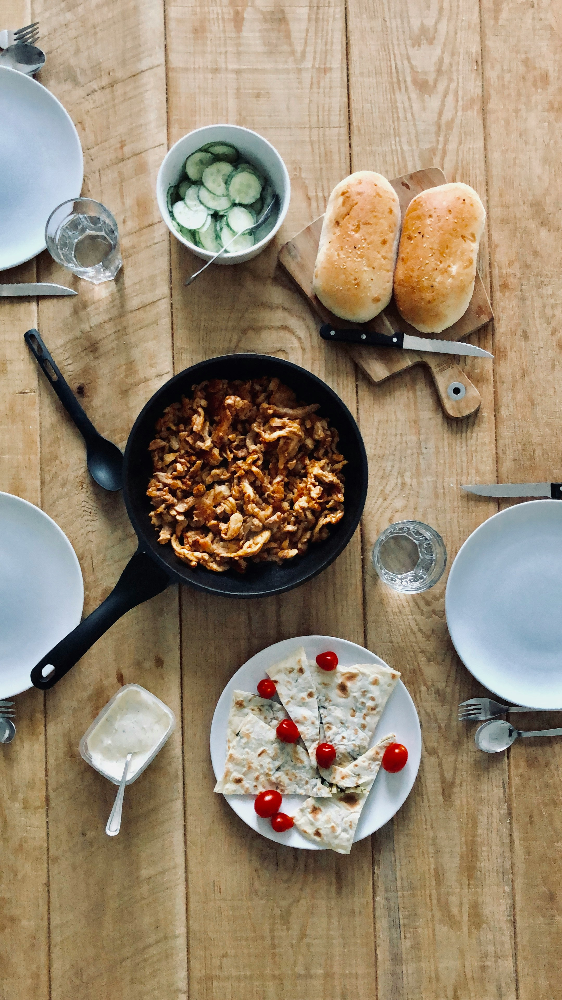

Griechisches Gyros
| 4 Schweineschnitzel |
| 3 Knoblauchzehe(n) |
| 2 Zwiebel(n) |
| 2 EL Zitronensaft |
| 3 TL Majoran |
| 2 TL Thymian |
| 3 TL Paprikapulver, edelsüß |
| 1 TL Kreuzkümmel |
| Salz und Pfeffer |
| 6 cl Olivenöl |
Zubereitung
Fleisch vorbereiten
Die Schweineschnitzel unter fließendem Wasser abspülen, mit Küchenpapier trocken tupfen und in feine Streifen schneiden.
Zwiebeln und Knoblauch vorbereiten
Zwiebeln schälen, halbieren und in Streifen schneiden. Knoblauchzehen schälen und fein hacken.
Marinade anrühren
Alles zusammen in eine große Schüssel oder verschließbare Dose geben. Den Kreuzkümmel frisch im Mörser zerstoßen, um das Aroma zu intensivieren. Alle weiteren Gewürze und Zutaten (Zitronensaft, Majoran, Thymian, Paprikapulver, Olivenöl) hinzufügen und gründlich vermengen.
Marinieren
Die Schüssel oder Dose verschließen und die Mischung für mehrere Stunden, am besten über Nacht, im Kühlschrank marinieren lassen.
Gyros braten
Am nächsten Tag eine Pfanne stark erhitzen und das marinierte Gyros darin rundum knusprig anbraten.
Abschmecken
Zum Schluss nach Belieben mit Salz und Pfeffer würzen.
Tipp
Schmeckt besonders lecker mit Tzatziki, Fladenbrot oder einem knackigen Salat!
Rezept erstellt von
 Renato Lüpnitz
Renato Lüpnitz